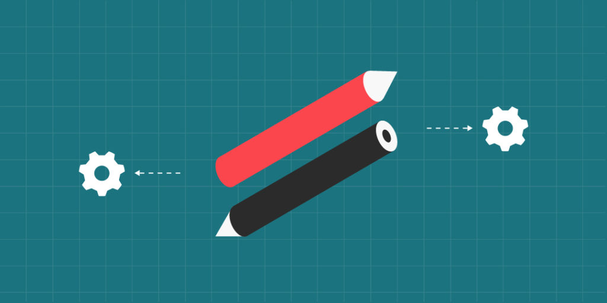
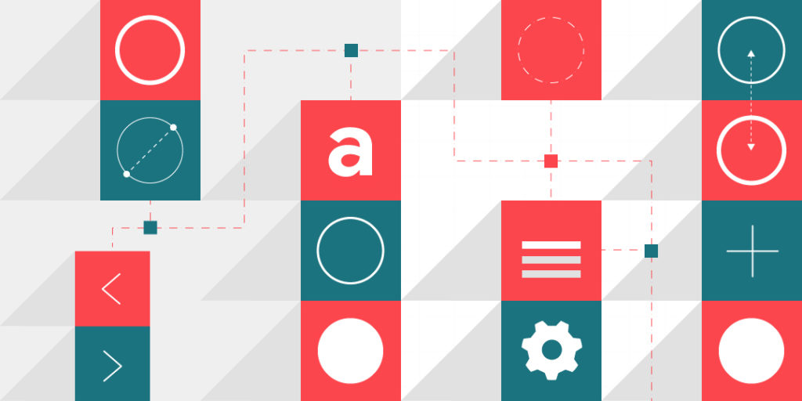

As we continue our popular series on UX/UI design systems, we turn our focus to maintaining design systems for success. A recent Invision report states design is reshaping products, portfolios, and industry standards at more than 70% of companies.
Fixing a problem in development costs 10 times as much as fixing it in design, and 100 times as much if you’re trying to fix the problem in a product that’s already been released.
– Sebastian Nils Mitchell
As a stakeholder, you probably view your organization’s UI design system as a reliable way to boost your bottom line. You’re not wrong. In fact, if you want to guarantee long-term success (and return) of your product, a UI design system needs to shift from project-based to product-based.
UI Design Systems First: A New Approach
Often we see companies embarking on a UI design system with a definitive timeline including a start-and-end date. Yet, just like your product, your design system needs to be mapped out for longevity. There are many factors that influence consumers to purchase your product and all of them also have a place in your design system. As your product evolves, the framework of how you make and market that product must evolve with it.
Unfortunately, this has proven to be a difficult task for some design system adoptees. In Sparkbox’s 2019 design systems survey, many respondents reported that maintaining a design system was one of the top challenges for an organization. When asked what they would do differently they replied:
- Start with more people in the planning phase (including developers, technical architects, or executives).
- Make different technology/build decisions.
- Have better planning.
Notice a theme here? In all instances, there is a need for better and more inclusive planning. The reason why so many companies get blindsided by the challenges of their design system is that they don’t realize it will be a continuous effort that must grow with their organization.
Frost’s Tips For Success
Web designer, speaker, writer, and design systems expert Brad Frost wrote that a (design) “system is a living, breathing entity that must be continually tweaked and maintained to become the resource it is meant to be.” A “design system first” approach helps make that maintenance process more thoughtful. It eliminates those top three failure points by building a system that intends to change with its product.
Frost’s book Atomic Design provides details on how to create and maintain a UX design system using a methodology based upon atomic elements. In it, we can find an absolute treasure trove of resources and insights to set up your design system for long-term success.
The book is available online and features a chapter dedicated to maintaining a UX design system. Here, we are sharing a few of those tips with you. You can use them to guide your design system goals, avoid common pitfalls and ultimately, boost your bottom line.
Get Buy-In From The Top Down
Up to 86% of employees and executives cite a lack of collaboration or ineffective communication for workplace failures. The difference between an official design system and one that is not: buy-in. In order for a design system to change from a side project to an actual product, your system needs support from the key stakeholders in the company. From the team of people who will be charged to planning and building the design system, to everyone in your organization who is going to be using it, you need to market the system and its benefits to employees. To do that effectively, it helps to have an established communication channel so everyone is aware of its presence, purpose, and profit.
Adapt Continuously

A succinct governance plan, one that outlines a clear set of roles, responsibilities, and processes to guide development and usage, is key to improving the adaptability of your design system. The two most important things you can do to encourage this are:
- Establish specific times where the team meets regularly for discussions.
- Create a structured, informed process for making updates to the system so it stays within the overall roadmap of your organization.
Regular communication keeps everyone in the loop as to how and when to update the system. It also provides rules for when and how to make updates. This prevents one-off tweaks from skewing the efficiency of your system.
UI Design System Changes = Application Changes
The key to maintaining your design system is also one of the most difficult. You must be able to apply changes to the system documentation AND to all live applications. Applying these updates simultaneously ensures neither loses its relevance or falls out-of-date. Custom APIs are one way to accomplish this. If that’s not an accessible option, look into templating languages (such as Mustache, Handlebars, Underscore, and Jade) that connect design system components with applications. If neither option is feasible, do what you can on a continual manual basis.
It’s Cross-Disciplinary
Frost has a great analogy that likens aspects of the design system to “a watering hole for the entire organization.” We talked about creating a shared language through collaborative thinking methods in our post “UX Design System Components.” That step really feeds into this point. The system needs to be approachable to every discipline whether the user is a UX designer, engineer, copywriter or art director. Doing so helps your organization master all the different perspectives that make your product successful and viable to consumers. It also leads to the next point, which is that people won’t use what they don’t like to look at.
It’s Approachable
Your designers know that more than ninety percent of consumers will leave a website with poor visual design. So what makes your design system’s interface any different? Don’t get us wrong, how your system functions will always take precedence over how it looks. That doesn’t deny the psychological fact that a visually appealing interface will literally improve the attention span of its users.
It’s Visible
There’s a reason why 80 percent of businesses use social collaboration tools for enhancing business processes (McKinsey). If you want people to use the design system that your team has worked so hard to build, then you need to make sure they know it’s there. Making news and updates about the system part of employees’ day-to-day can help with that. There are plenty of collaboration tools to keep users in the organization continuously informed. Software like Yammer, Slack and Basecamp help spread the word about:
- Component updates.
- Planning.
- Accomplishments.
- Tips and tricks.
If you’re a smaller organization, you can always use more straightforward ways to communicate about the system, like through email lists.
UI Design System Ecosystem

According to Forrester, the revenue impact from a 10% improvement in an enterprise’s customer experience score can translate into more than $1 billion. It’s why so many companies now prioritize UI design systems. As consumers move across devices and approach brands at various stages of their consumer journey, businesses must be ready to adapt.
For established market leaders, planning and building a UI design system is a necessary part of an organization’s ecosystem. Start with the right perspective and lean into evolving the system with your product. Over time you’ll see the pay-off as web developers, and designers work in concert. Ensure your customers enjoy the best product and experience possible. And remember, always hire an experienced design system team.